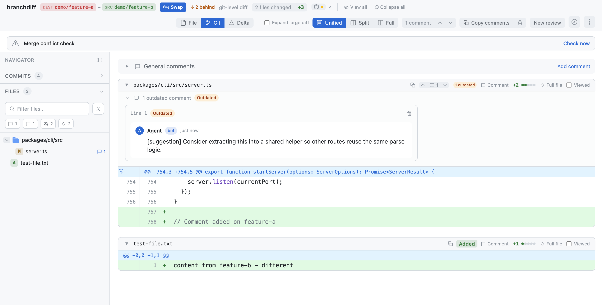
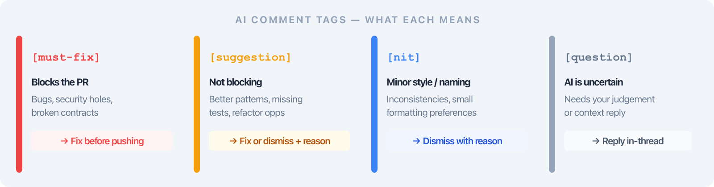
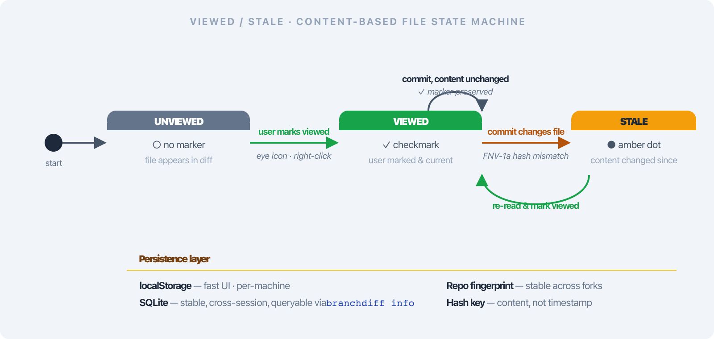
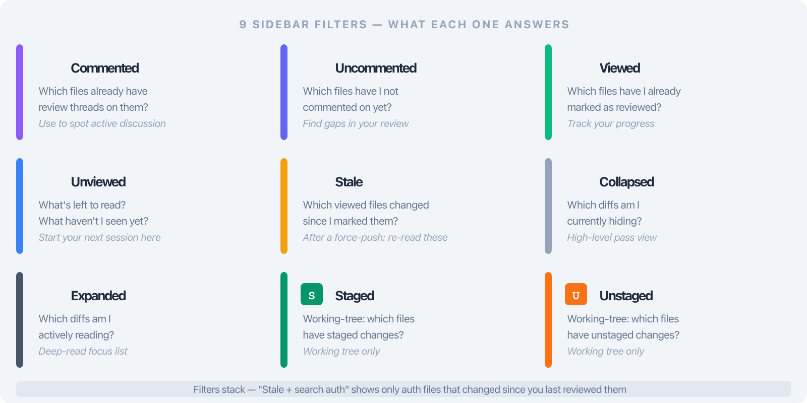

Deck 03 · branchdiff features
Comments with a review surface.
Severity tags that filter and sort, a viewed counter that survives force-pushes, a WYSIWYG editor that drops the Write/Preview toggle, and AI-generated code tours that onboard a new engineer in minutes.
tags must-fix · suggestion · nit · question
state SQLite · repo fingerprint
editor Milkdown / ProseMirror
tours agent tour-start/step/done
02 · the problem
Review comments have no taxonomy — and no memory.
- No severity taxonomy. Every reviewer invents their own [MUST-FIX] / nit: / ⚠️ prefix; none of them filter or sort.
- The "viewed" checkbox forgets. Push one commit and GitHub resets every file — start over on a 90-file PR.
- Write / Preview toggle. Markdown by hand, then click to see what it looks like, then back to edit. Every comment, twice.
- "Go read the codebase." Onboarding a new engineer means handing them a pile of folders with no map.
The result: reviewers triage in their head, lose their place after every push, and skip writing the small comments because the editor is in the way — so the PR ships with three loud nits buried in a wall of text.
03 · the solve
A real review surface — tags, state, editor, tours.
branchdiff treats comments as structured data: every thread carries a severity tag and a lifecycle, every viewed file is hashed and persisted, and the editor is WYSIWYG so you write GFM the way it'll render.
4
Severity tags
must-fix · suggestion · nit · question
FNV-1a
Stale detection
Content hash, not timestamp
∞
Force-pushes
Viewed state survives
Same surface, both forges — push a thread to GitHub or Bitbucket and the tag survives as the bracketed prefix the reviewer already uses, just standardized.
04 · inline comments
Click + on any diff line — tag as you type.

[suggestion] thread · colored badge · reply chain
- One click on the line gutter. The + appears on hover for any line in the diff.
- Multi-line threads. Pass --end-line from the CLI, or drag the end handle in the UI.
- Tags render as colored badges. Red [must-fix], green [suggestion], blue [question], grey [nit].
- Filterable in the sidebar. Tagged threads show up under the Commented filter with their severity counts.
05 · tag taxonomy
Four tags every reviewer already means.

must-fix · suggestion · nit · question — semantics, not decoration
Before · ad-hoc
"Critical:" / "⚠️" / "(nit)" / "MUST-FIX:" / "minor:" — every team, every reviewer, every PR a different dialect. Nothing filters, nothing sorts.
After · four tags
One taxonomy. Tags become filter and sort keys in the sidebar, persist into the pushed comment as a bracketed prefix, and map cleanly to resolve vs. dismiss.
06 · rich-text editor
Write the comment as it'll render.
- WYSIWYG Milkdown / ProseMirror. Bold, inline code, fenced blocks, headings, lists, quotes, strikethrough, links — formatted as you type.
- No Write / Preview toggle. The editor is the preview. You see formatting live and edit it in place.
- Stored as GitHub-Flavored Markdown. Round-trips losslessly through both forges; the comment on the PR is exactly what you wrote.
- Same editor, both forges. Sync to GitHub or Bitbucket — the GFM payload is identical.
Why it matters: removing the Write/Preview tax means the small comments get written — the one-line nit, the quick question — instead of being skipped because formatting them was more work than the comment was worth.
07 · thread lifecycle
Open → Resolved or Dismissed — with reasons.
open
Default state
New thread, awaiting action
✓
Resolved
Addressed — fix landed
⊘
Dismissed
Won't fix — reason recorded
- Reply chains on any thread. Discussion stays attached to the line and the tag.
- Dismissed requires a reason. "Won't fix" is captured inline — no silent rejections.
- Threads with replies stay local. Forge APIs don't map multi-reply chains, so push skips them rather than flattening the conversation.
Honest scope: multi-reply threads don't push to the forge — they live in your branchdiff session (and in the export bundle). Single comments resolve and sync normally.
08 · diff-wide comments
General comments and a viewed counter that survives force-pushes.
- General (diff-wide) comments. PR-level notes pulled from the forge (v1.6.1+) — count badge + jump button in the toolbar.
- Eye icon or r key. Mark any file viewed from the row or the keyboard; auto-advance scrolls to the next.
- "12 / 38 viewed" counter. Sidebar 👁 N badge plus a progress line — always know what's left.
- Persisted in SQLite. Keyed by repo fingerprint + branch pair — survives commits, force-pushes, and machine moves.
The fix for "viewed resets on every push": branchdiff doesn't trust the forge's checkbox. It signs each viewed file with a content hash and re-checks the signature on every render — so the counter only flips when the file actually changed.
09 · viewed / stale state
Stale detection by content hash, not timestamp.

viewed → stale → viewed · FNV-1a signature per file
- FNV-1a hash of the diff signature. Content-based, so an unrelated commit that doesn't touch the file leaves it viewed.
- Viewed → stale only when content changes. File flips to an amber dot the moment its diff signature differs.
- Re-view in one click. v1.7.0 re-signs the hash so the file stays viewed until the content moves again.
- Stale is its own filter. Combine Stale + search auth → exactly the auth files you need to re-read.
10 · collapse & working tree
Your place persists — and the working tree opens up.
- Per-(branch_pair + view_mode) collapse. Collapse state is keyed by the pair you're comparing and the view (unified / split / full) — switch modes, your layout comes back.
- 1.5s debounced sync. UI state hooks batch writes to the server; offline suppression skips sync when the server is down.
- Working-tree toggle. Staged / unstaged switch via --staged; -p 0 shows unstaged-only.
- Row badges S / U. See at a glance what's staged vs. still in your working tree — filterable in the sidebar.

9 filters · Staged / Unstaged integrate with the working-tree toggle
11 · code tours
Onboard a new engineer with an AI-generated tour.
- Tour primitives in the agent. agent tour-start, tour-step, tour-done — a guided walk through the repo, not a README.
- Rich steps. Each step supports Markdown prose, embedded Mermaid diagrams, and focus: refs that jump to a file or line.
- Compass icon + badge in the toolbar. Open the tour drawer, step forward, see where you are in the arc.
- Replace "go read the codebase." A new engineer follows a real path through the code — entry point, request flow, data model — written by someone who already knows it.
Tours are first-class content — Markdown + Mermaid + file refs, generated by the same agent that reviews PRs. The same primitives power both onboarding and reviewer context.
12 · cli
Comments, state, and tours — from the terminal.
comment · inline · tagged
$ branchdiff comment \
--file src/auth/token.ts --line 42 --end-line 48 \
--tag must-fix \
--body "Token expiry leaks into the response body. Strip it before serialize()."
tour · start · step · done
$ branchdiff agent tour-start --title "Auth flow"
$ branchdiff agent tour-step \
--focus src/auth/login.ts:12 \
--body "Entry point: validateCredentials()."
$ branchdiff agent tour-done
State inspection: branchdiff info prints the repo fingerprint and UI state size; branchdiff state reset clears viewed / collapse state for the current pair without touching comments.
13 · recap
The review surface, in one line.
Tagged threads, persistent viewed state, a WYSIWYG editor, and AI-generated tours — comments become structured data with memory, and the editor stops being in the way.
- Four severity tags — must-fix, suggestion, nit, question — that filter and sort.
- WYSIWYG Milkdown editor: write GFM the way it renders, no Write/Preview toggle.
- Thread lifecycle — open / resolved / dismissed-with-reason — with reply chains.
- Viewed counter that survives force-pushes; FNV-1a stale detection by content hash.
- Per-(pair + mode) collapse persistence; staged / unstaged working-tree toggle.
- AI-generated code tours — Markdown, Mermaid, focus refs — for onboarding and review context.